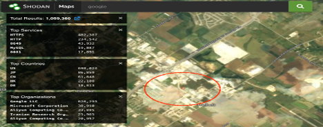
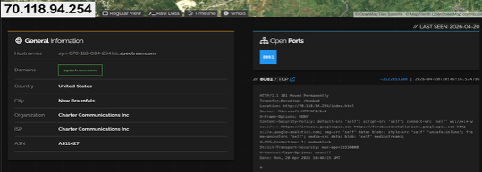
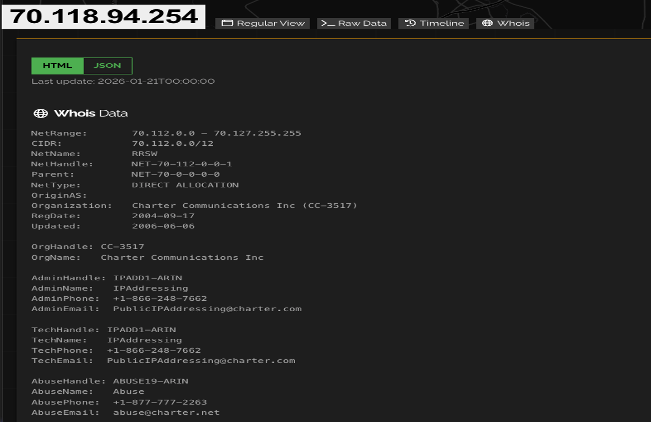

I am currently working toward a degree in cybersecurity while building my skills and experience in the field. I have a background in supply chain and planning, and I am transitioning into cybersecurity to grow my career. I am interested in learning more about security tools, systems, and how to protect data and networks. I am currently building my portfolio and working on projects to improve my technical skills.
ruben@ruben-mendoza.com
GitHub: https://github.com/Mendoza15
LinkedIn: https://www.linkedin.com/in/mendozaruben
I like Shodan because it allows you to search for devices and services that are connected to the internet instead of just regular websites. When I used it in a previous assignment, I was able to search for open ports and find real systems that were exposed. This helped me understand how information can be gathered from public sources without directly accessing anything.
What I found most useful about Shodan is that you can search and find IP addresses and then identify who they belong to. From there, you can do a gentle probe using tools like telnet to see what services are running. You can also look at open ports and then use whois data to get more information about the system. This includes details like the server provider, admin emails, and even a phone number to report abuse. This showed me how much information is publicly available if you know where to look.
For this example, I searched for Google and selected a nearby result. From there, I was able to view the IP address, open ports, and whois information, which confirmed details about the provider and location. The screenshots below show the results I was able to gather using Shodan.
Shodan Map View:

Open Ports and Server Info:

Whois Data:
